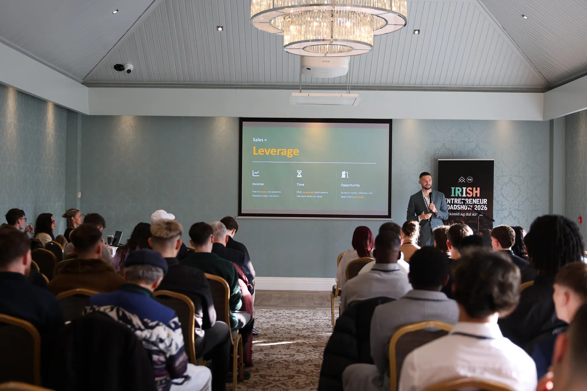
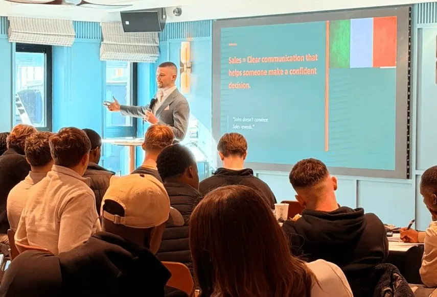

Placed within 8 weeks
Aoife R.
Went from an unrelated retail role to a remote customer success position — the structure was what finally made it click.

Free Live Webinar
Skip the trial and error. See exactly how a 12-stage, live-coached pathway takes you from stuck to placement-ready — in one free session.
This Wednesday · 7:00 PM UK Time
Session starts in
Book Your Seat
One form. Takes about 20 seconds. We'll email your join link straight away.
This Wednesday · 7:00 PM UK Time · Online via Zoom
Check your inbox for your confirmation and join link.


Live, In The Room
This isn't a pre-recorded webinar with a chat bot answering questions. Our sessions are run live, in person and online, by people who train sales teams for a living — the same sessions you see pictured here, at events like the Irish Entrepreneur Roadshow.
Expect direct answers, real examples, and time left over for your actual questions — not a scripted pitch with a countdown timer built in.
Before vs After
Before
After
How It Works
The full breakdown happens live in the session. Here's the shape of it, so you know what you're walking into.
Digital sales, tech sales, AI-enabled workflows, or a flexible operations track — you choose the direction, based on where you're starting from.
Structured modules, live calls, and one-to-one feedback — not a content library you work through alone.
A verified project or portfolio, career-readiness checkpoints, and support moving toward real opportunities.
Is This For You?
You're doing everything right on paper — solid CV, steady job — but you've noticed your growth has a ceiling that isn't really about effort anymore.
You've thought about a career pivot, but you don't want a vague "upskilling" course. You want a structured, coached pathway you'd be proud to talk about in an interview.
You've got a few focused hours a week, not forty — and you want a plan built around the life you already have, not instead of it.
The Energy Is Real
A look inside one of our recent live sessions — no stock photos, no stand-ins.

Real Students. Real Outcomes.
Placed within 8 weeks
Aoife R.
Went from an unrelated retail role to a remote customer success position — the structure was what finally made it click.
Built a verified AI portfolio
Daniel K.
I'm not technical at all. The coaching made the difference — I left with three real projects, not just a certificate.
Doubled client meetings booked
Priya S.
The live call reviews were brutal in the best way. My discovery calls completely changed within a month.
First B2B tech sales offer
Callum M.
Coming from hospitality, I didn't think enterprise sales was realistic. The pathway made it a very specific, achievable plan.
Built her first remote role around childcare
Sarah T.
I needed something flexible and legitimate. This was the first programme that took both of those seriously.
Promoted within her own company
Jade O.
Turns out the verified project I built during the programme was exactly what got me noticed internally.

Real Outcomes
Finish the programme and you leave with more than notes — a certificate that shows you actually did the work, handed to you in person.
Questions People Always Ask
Yes — the pathway is built around a few focused hours a week, with live sessions scheduled outside standard working hours. We'll cover exactly how this fits around a job in the session itself.
This isn't a self-paced video library — it's live coaching, structured checkpoints, and a cohort around you. The structure is specifically designed to solve the "never finished it" problem.
No — this is a structured skills pathway, typically six focused months. We're direct about what's realistic in the session, including what it does and doesn't guarantee.
The live session itself is completely free, and no technical background is required. Programme pathways and any associated costs are only covered if you choose to explore them after the session.
We'll walk through the pathway in full and leave time for questions. If it's a fit, we'll tell you what the next step looks like — there's no pressure either way.
Seats Are Limited
One live session. No recording. Bring your questions.
This Wednesday · 7:00 PM UK Time